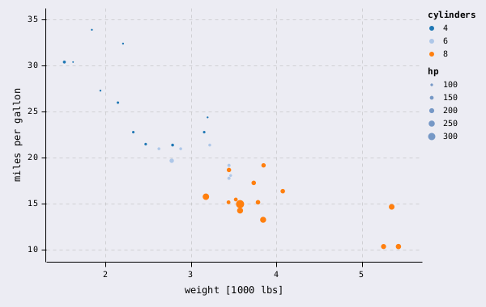
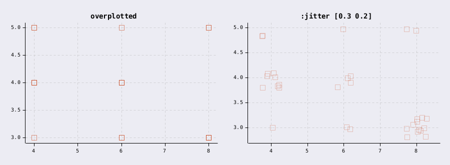
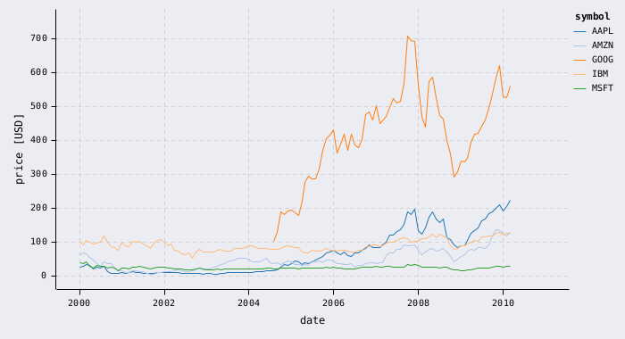
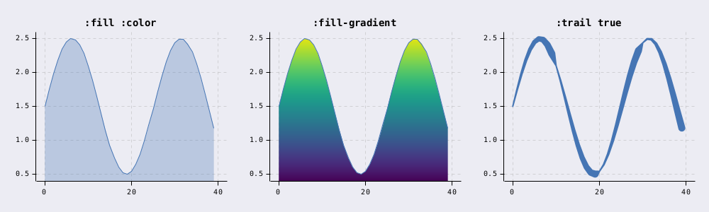
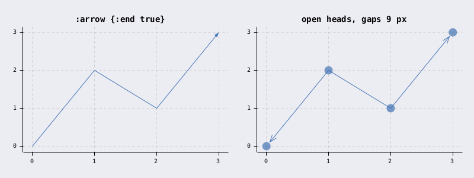
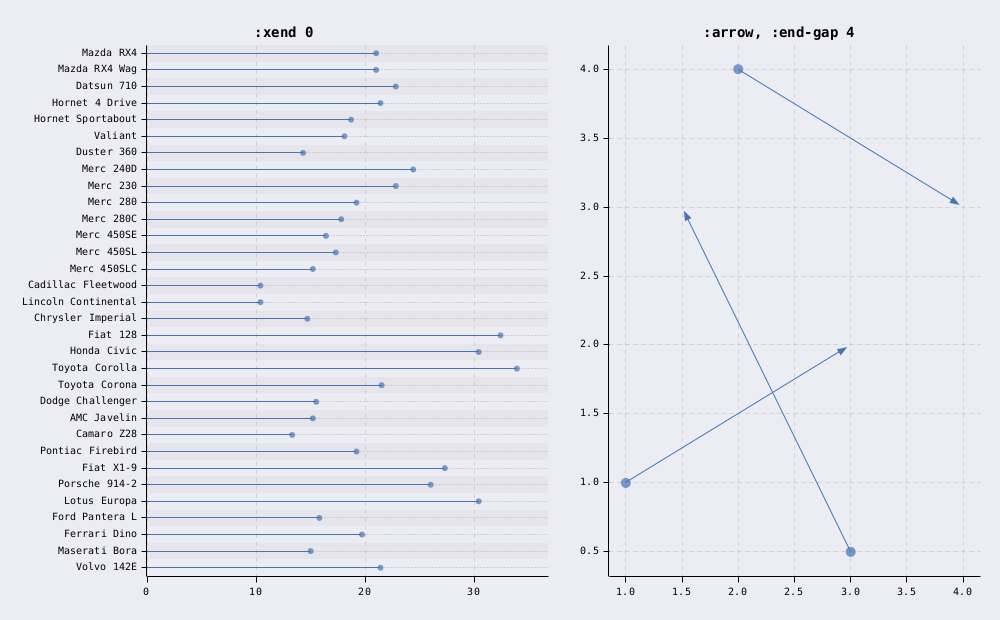
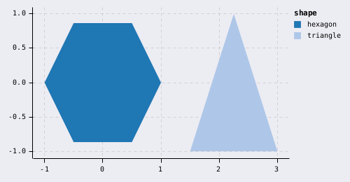

13 Charts: points and paths
Marks placed at data positions: points (scatter), lines through them (line), straight pieces between two positions (segment) and filled shapes (polygon). Each chart lists the mapping keys it reads, its own options and the shared option groups it takes (documented once in the Shared options chapter).
(ns reference.charts-points-paths
(:require [fastmath.random :as r]
[cljplot2.chart :as chart]
[cljplot2.core :as plot]
[cljplot2.data.levels :as levels]
[cljplot2.describe :as describe]
[notebook-utils :as nu]))Data: Motor Trend car road tests (1974), R datasets package mtcars (Henderson & Velleman 1981); licence: Part of R (GPL-2 | GPL-3).
(def mtcars (nu/dataset :mtcars))| model | mpg | cyl | disp | hp | drat | wt | qsec | vs | am | gear | carb |
|---|---|---|---|---|---|---|---|---|---|---|---|
| Mazda RX4 | 21 | 6 | 160 | 110 | 3.9 | 2.62 | 16.46 | 0 | 1 | 4 | 4 |
| Mazda RX4 Wag | 21 | 6 | 160 | 110 | 3.9 | 2.875 | 17.02 | 0 | 1 | 4 | 4 |
| Datsun 710 | 22.8 | 4 | 108 | 93 | 3.85 | 2.32 | 18.61 | 1 | 1 | 4 | 1 |
| Hornet 4 Drive | 21.4 | 6 | 258 | 110 | 3.08 | 3.215 | 19.44 | 1 | 0 | 3 | 1 |
| Hornet Sportabout | 18.7 | 8 | 360 | 175 | 3.15 | 3.44 | 17.02 | 0 | 0 | 3 | 2 |
| Valiant | 18.1 | 6 | 225 | 105 | 2.76 | 3.46 | 20.22 | 1 | 0 | 3 | 1 |
| Duster 360 | 14.3 | 8 | 360 | 245 | 3.21 | 3.57 | 15.84 | 0 | 0 | 3 | 4 |
| Merc 240D | 24.4 | 4 | 146.7 | 62 | 3.69 | 3.19 | 20 | 1 | 0 | 4 | 2 |
| Merc 230 | 22.8 | 4 | 140.8 | 95 | 3.92 | 3.15 | 22.9 | 1 | 0 | 4 | 2 |
| Merc 280 | 19.2 | 6 | 167.6 | 123 | 3.92 | 3.44 | 18.3 | 1 | 0 | 4 | 4 |
| Merc 280C | 17.8 | 6 | 167.6 | 123 | 3.92 | 3.44 | 18.9 | 1 | 0 | 4 | 4 |
| Merc 450SE | 16.4 | 8 | 275.8 | 180 | 3.07 | 4.07 | 17.4 | 0 | 0 | 3 | 3 |
| Merc 450SL | 17.3 | 8 | 275.8 | 180 | 3.07 | 3.73 | 17.6 | 0 | 0 | 3 | 3 |
| Merc 450SLC | 15.2 | 8 | 275.8 | 180 | 3.07 | 3.78 | 18 | 0 | 0 | 3 | 3 |
| Cadillac Fleetwood | 10.4 | 8 | 472 | 205 | 2.93 | 5.25 | 17.98 | 0 | 0 | 3 | 4 |
| Lincoln Continental | 10.4 | 8 | 460 | 215 | 3 | 5.424 | 17.82 | 0 | 0 | 3 | 4 |
| Chrysler Imperial | 14.7 | 8 | 440 | 230 | 3.23 | 5.345 | 17.42 | 0 | 0 | 3 | 4 |
| Fiat 128 | 32.4 | 4 | 78.7 | 66 | 4.08 | 2.2 | 19.47 | 1 | 1 | 4 | 1 |
| Honda Civic | 30.4 | 4 | 75.7 | 52 | 4.93 | 1.615 | 18.52 | 1 | 1 | 4 | 2 |
| Toyota Corolla | 33.9 | 4 | 71.1 | 65 | 4.22 | 1.835 | 19.9 | 1 | 1 | 4 | 1 |
Data: Monthly stock prices for five companies, vega-datasets 3.3.1 stocks.csv (https://cdn.jsdelivr.net/npm/vega-datasets@3.3.1/data/stocks.csv); licence: none listed - see vega-datasets (cite Vega as the source).
(def stocks (nu/dataset :stocks))| symbol | date | price |
|---|---|---|
| MSFT | 2000-01-01 | 39.81 |
| MSFT | 2000-02-01 | 36.35 |
| MSFT | 2000-03-01 | 43.22 |
| MSFT | 2000-04-01 | 28.37 |
| MSFT | 2000-05-01 | 25.45 |
| MSFT | 2000-06-01 | 32.54 |
| MSFT | 2000-07-01 | 28.4 |
| MSFT | 2000-08-01 | 28.4 |
| MSFT | 2000-09-01 | 24.53 |
| MSFT | 2000-10-01 | 28.02 |
| MSFT | 2000-11-01 | 23.34 |
| MSFT | 2000-12-01 | 17.65 |
| MSFT | 2001-01-01 | 24.84 |
| MSFT | 2001-02-01 | 24 |
| MSFT | 2001-03-01 | 22.25 |
| MSFT | 2001-04-01 | 27.56 |
| MSFT | 2001-05-01 | 28.14 |
| MSFT | 2001-06-01 | 29.7 |
| MSFT | 2001-07-01 | 26.93 |
| MSFT | 2001-08-01 | 23.21 |
13.1 scatter
A point per row at its x and y; colour, shape and size may come from the data, and :order sets which points are drawn on top.
| Option | Type | Default | Description |
|---|---|---|---|
| :x (required) | a keyword, a function or a categorical marker of one | x position (data units) | |
| :y (required) | a keyword, a function or a categorical marker of one | y position (data units) | |
| :color | a keyword, a function or a categorical marker of one or nil | point colour per row | |
| :shape | a keyword, a function or a categorical marker of one or nil | point shape per row | |
| :size | a keyword, a function or a categorical marker of one or nil | point size per row | |
| :order | a keyword, a function or a categorical marker of one or nil | draw order: points drawn by its values (see :order-direction), else in data order |
(plot/render-image {:data mtcars
:mapping {:x :wt :y :mpg :color (levels/categorical :cyl) :size :hp}
:charts [(chart/scatter)]
:scales {:color {:title "cylinders"}}
:labels {:x "weight [1000 lbs]" :y "miles per gallon"}}
{:width 600 :height 380})
Its options: the point style used when nothing is mapped, the draw order of a mapped :order, and jitter - random offsets separating points on a grid of values (seeded here, so the image is the same on every build):
| Option | Type | Default | Description |
|---|---|---|---|
| :size | a non-negative number | 6 | point size in pixels (a mapped :size wins) |
| :color | a clojure2d color or :none | [69 117 180 180] | point colour (a mapped :color wins) |
| :stroke-color | a clojure2d color or :none | :none | outline colour: a colour or :none |
| :stroke-width | a non-negative number | 1 | outline width in pixels |
| :shape | a shape character, keyword or shape map | \O | point shape (a mapped :shape wins) |
| :padding | map of one of :x :y to [lo hi], non-negative numbers | 0.05 on every side | padding of the data span per position axis, {:x [lo hi] :y [lo hi]} fractions of the span |
| :order-direction | one of :ascending :descending | :ascending | draw order of the values of a mapped :order (later points on top) |
| :jitter | [a non-negative number, a non-negative number] | [dx dy] - uniform random offsets within ±dx / ±dy data units added to the positions | |
| :rng | a fastmath random generator or nil | an unseeded generator (builds differ) | random number generator for jitter (seeded for reproducible plots) |
(plot/render-image (plot/arrange [{:data mtcars
:mapping {:x :cyl :y :gear}
:charts [(chart/scatter {:size 10 :shape \s :color [200 80 40 150]})]
:labels {:title "overplotted"}}
{:data mtcars
:mapping {:x :cyl :y :gear}
:charts [(chart/scatter {:size 10 :shape \s :color [200 80 40 150]
:stroke-color :black :stroke-width 0.5
:jitter [0.3 0.2] :rng (r/rng :mersenne 7)})]
:labels {:title ":jitter [0.3 0.2]"}}]
{:columns 2})
{:width 900 :height 330})
Shared options: Data and mapping (:data :mapping).
13.2 line
A polyline per group through the rows ordered by x; it may fill the area below, stack with other groups, or carry a colour or width along its length. (The dataset’s dates are text: the mapping parses them.)
| Option | Type | Default | Description |
|---|---|---|---|
| :x (required) | a keyword, a function or a categorical marker of one | x position (data units) | |
| :y (required) | a keyword, a function or a categorical marker of one | y position (data units) | |
| :color | a keyword, a function or a categorical marker of one or nil | line colour: per group (ordinal) or along the line (linear or binned) | |
| :size | a keyword, a function or a categorical marker of one or nil | line width: per group, or per point with :trail | |
| :dash | a keyword, a function or a categorical marker of one or nil | dash style per group | |
| :pattern | a keyword, a function or a categorical marker of one or nil | area fill pattern per group | |
| :group | a keyword, a function or a categorical marker of one or nil | groups without a visual aesthetic, each its own line |
(plot/render-image {:data stocks
:mapping {:x #(java.time.LocalDate/parse (:date %)) :y :price :color :symbol}
:charts [(chart/line)]
:labels {:x "date" :y "price [USD]"}}
{:width 700 :height 380})
13.2.1 Style
The area under a line (:fill), its gradient, the stroke’s opacity and the trail - a filled band whose width follows a mapped :size:
| Option | Type | Default | Description |
|---|---|---|---|
| :fill | :color or a clojure2d color or :none | :none | area between the line and y = 0: :color (the line colour at :alpha), a colour or :none |
| :alpha | a number in [0 1] | 0.6 | area fill opacity of :fill :color and of stacked areas |
| :fill-gradient | a clojure2d gradient: a preset keyword, a colour list or a function | clojure2d gradient (preset, colours or function of t) colouring the areas; wins over :fill | |
| :fill-gradient-axis | one of :x :y | :x | axis the :fill-gradient runs along, over that scale's range (needs :fill-gradient) |
| :stroke-alpha | a number in [0 1] | multiplies the stroke colour's opacity of unstacked lines (the legend key stays opaque) | |
| :trail | true or false or nil | false | draw a filled trail whose width follows a linear mapped :size at every point |
(def wave (for [t (range 40)] {:t t :v (+ 1.5 (Math/sin (* 0.25 t))) :w (+ 1 (mod t 10))}))| t | v | w |
|---|---|---|
| 0 | 1.5 | 1 |
| 1 | 1.747403959254523 | 2 |
| 2 | 1.979425538604203 | 3 |
| 3 | 2.181638760023334 | 4 |
| 4 | 2.3414709848078967 | 5 |
| 5 | 2.448984619355586 | 6 |
| 6 | 2.4974949866040546 | 7 |
| 7 | 2.483985946873937 | 8 |
| 8 | 2.409297426825682 | 9 |
| 9 | 2.278073196887921 | 10 |
| 10 | 2.0984721441039564 | 1 |
| 11 | 1.8816609920523317 | 2 |
| 12 | 1.6411200080598671 | 3 |
| 13 | 1.3918048654698916 | 4 |
| 14 | 1.14921677231038 | 5 |
| 15 | 0.9284386812576563 | 6 |
| 16 | 0.7431975046920718 | 7 |
| 17 | 0.6050106417714165 | 8 |
| 18 | 0.522469882334903 | 9 |
| 19 | 0.500707211024622 | 10 |
(plot/render-image (plot/arrange [{:data wave :mapping {:x :t :y :v}
:charts [(chart/line {:fill :color :alpha 0.3})]
:labels {:title ":fill :color"}}
{:data wave :mapping {:x :t :y :v}
:charts [(chart/line {:fill-gradient :mpl/viridis :fill-gradient-axis :y})]
:labels {:title ":fill-gradient"}}
{:data wave :mapping {:x :t :y :v :size :w}
:charts [(chart/line {:trail true})]
:labels {:title ":trail true"}
:legend false}]
{:columns 3})
{:width 1000 :height 300})
13.2.2 Path
How points are joined: sorted by x or in data order, what a missing value does (a break or a bridge), how groups combine (the Layering and position chapter shows :stack and the streamgraphs), and the padding:
| Option | Type | Default | Description |
|---|---|---|---|
| :bridge | map | {:alpha 0.3} | style of the segments bridging gaps with :gaps :bridge: :alpha (a fraction of the line alpha), optional :width and :dash |
| :bridge :alpha (required) | a number in [0 1] | 0.3 in the theme's :bridge (a given :bridge replaces it whole) | bridge opacity, a fraction of the line's alpha |
| :bridge :width | a non-negative number | the line's width | bridge width in pixels |
| :bridge :dash | :none, a dash style (:dashed :dot-dash :dot-dot-dash :dotted :long-dash :loose-dot :solid :two-dash) or a sequence of positive numbers or nil | the line's dash | dash style of the bridge |
| :sort | true or false or nil | true | order the points by numeric or temporal x (false - data order) |
| :gaps | one of :break :bridge | :break (stacked lines take no :gaps) | an invalid y breaks the line: :break (empty space) or :bridge (a straight segment in the :bridge style) |
| :position | one of :normalize :overlay :silhouette :stack :wiggle | :overlay | how groups combine: :overlay, stacked :stack / :normalize, or streamgraph :silhouette / :wiggle |
| :padding | map of one of :x :y to [lo hi], non-negative numbers | 0.05 on every side; y [0 0.05] when stacked without negative values | padding of the data span per position axis, {:x [lo hi] :y [lo hi]} fractions of the span |
(def spiral (for [t (range 0 12 0.25)] {:x (* t (Math/cos t)) :y (* t (Math/sin t)) :v (when-not (< 5 t 6) t)}))| x | y | v |
|---|---|---|
| 0.0 | 0.0 | 0 |
| 0.24222810542766118 | 0.061850989813630734 | 0.25 |
| 0.4387912809451864 | 0.2397127693021015 | 0.5 |
| 0.5487666516553656 | 0.5112290700175006 | 0.75 |
| 0.5403023058681398 | 0.8414709848078965 | 1.0 |
| 0.3941529529940858 | 1.1862307741944829 | 1.25 |
| 0.10610580250155435 | 1.4962424799060816 | 1.5 |
| -0.31193059738661116 | 1.7219754070293896 | 1.75 |
| -0.8322936730942848 | 1.8185948536513634 | 2.0 |
| -1.4133906511261631 | 1.7506646929978227 | 2.25 |
| -2.002859038867334 | 1.496180360259891 | 2.5 |
| -2.541831541239275 | 1.0495677281439122 | 2.75 |
| -2.9699774898013365 | 0.4233600241796016 | 3.0 |
| -3.2309214472617755 | -0.3516341872228522 | 3.25 |
| -3.277598405517787 | -1.2277412969136694 | 3.5 |
| -3.077097590023353 | -2.143354945283789 | 3.75 |
| -2.6145744834544478 | -3.027209981231713 | 4.0 |
| -1.8958718321336194 | -3.80370477247148 | 4.25 |
| -0.9485810974385086 | -4.3988855294929365 | 4.5 |
| 0.17861022621788863 | -4.746640747633045 | 4.75 |
(plot/render-image (plot/arrange [{:data spiral :mapping {:x :x :y :y}
:charts [(chart/line)]
:labels {:title ":sort true (default)"}}
{:data spiral :mapping {:x :x :y :y}
:charts [(chart/line {:sort false})]
:labels {:title ":sort false"}}
{:data spiral :mapping {:x :x :y :v}
:charts [(chart/line {:sort false :gaps :bridge :bridge {:alpha 0.5 :dash :dotted}})]
:labels {:title ":gaps :bridge"}}]
{:columns 3})
{:width 1000 :height 320})
13.2.3 Ends
Arrowheads at the ends of each run and gaps shortening it - e.g. to stop short of a marker:
| Option | Type | Default | Description |
|---|---|---|---|
| :arrow | map | arrowheads at the ends of every run of a plain stroked line | |
| :arrow :end | true or false | true | a head at the run's end |
| :arrow :start | true or false | false | a head at the run's start |
| :arrow :size | a positive number | 8.0 | head length in pixels |
| :arrow :angle | number, > 0, < 90 | 20.0 | angle in degrees between each side of the head and the line |
| :arrow :shape | one of :closed :open | :closed | :closed (a filled triangle) or :open (two strokes) |
| :start-gap | a non-negative number | shortens every run at its start, in pixels | |
| :end-gap | a non-negative number | shortens every run at its end, in pixels |
(def path-points [{:x 0 :y 0} {:x 1 :y 2} {:x 2 :y 1} {:x 3 :y 3}])| x | y |
|---|---|
| 0 | 0 |
| 1 | 2 |
| 2 | 1 |
| 3 | 3 |
(plot/render-image (plot/arrange [{:data path-points :mapping {:x :x :y :y}
:charts [(chart/line {:arrow {:end true}})]
:labels {:title ":arrow {:end true}"}}
{:data path-points :mapping {:x :x :y :y}
:charts [(chart/scatter {:size 14})
(chart/line {:arrow {:start true :end true :shape :open :size 12}
:start-gap 9 :end-gap 9})]
:labels {:title "open heads, gaps 9 px"}}]
{:columns 2})
{:width 800 :height 300})
Shared options: Line style (:color :width :dash); Fill patterns (:pattern :pattern-color); Data and mapping (:data :mapping); Curves (:interpolator :interpolator-params :curve :sample-step).
13.3 segment
A straight piece per row from (x, y) to (xend, yend); the ends may be mapped or given as literals, with arrowheads and gaps as on lines.
| Option | Type | Default | Description |
|---|---|---|---|
| :x (required) | a keyword, a function or a categorical marker of one | start x position (data units) | |
| :y (required) | a keyword, a function or a categorical marker of one | start y position (data units) | |
| :xend | a keyword, a function or a categorical marker of one or nil | end x position (data units) | |
| :yend | a keyword, a function or a categorical marker of one or nil | end y position (data units) | |
| :end-gap | a keyword, a function or a categorical marker of one or nil | end gap per row in pixels (e.g. the radius of the node an edge points at) | |
| :color | a keyword, a function or a categorical marker of one or nil | segment colour: per group (ordinal) or per row (linear or binned) | |
| :size | a keyword, a function or a categorical marker of one or nil | line width: per row (linear) or per group (ordinal) | |
| :dash | a keyword, a function or a categorical marker of one or nil | dash style per group | |
| :group | a keyword, a function or a categorical marker of one or nil | groups without a visual aesthetic (one stroke setup per group) |
(def moves [{:from "a" :x 1 :y 1 :x2 3 :y2 2} {:from "b" :x 2 :y 4 :x2 4 :y2 3} {:from "c" :x 3 :y 0.5 :x2 1.5 :y2 3}])| from | x | y | x2 | y2 |
|---|---|---|---|---|
| a | 1 | 1 | 3 | 2 |
| b | 2 | 4 | 4 | 3 |
| c | 3 | 0.5 | 1.5 | 3 |
(plot/render-image {:data moves
:mapping {:x :x :y :y :xend :x2 :yend :y2 :color :from}
:charts [(chart/segment {:width 2})]}
{:width 500 :height 320})
Its options: literal ends (here every segment starts at x = 0, a lollipop stem), arrows and gaps:
| Option | Type | Default | Description |
|---|---|---|---|
| :xend | a finite number, a java.time value or a level (string / keyword) or nil | the mapped :xend, else the start x | literal end x of every segment: a number, a java.time value or a level (wins over a mapped :xend) |
| :yend | a finite number, a java.time value or a level (string / keyword) or nil | the mapped :yend, else the start y | literal end y of every segment: a number, a java.time value or a level (wins over a mapped :yend) |
| :padding | map of one of :x :y to [lo hi], non-negative numbers | 0.05 on every side; 0 on a side where a literal :xend / :yend is the end of the axis extent | padding of the data span per position axis, {:x [lo hi] :y [lo hi]} fractions of the span |
| :arrow | map | arrowheads at the ends of every segment | |
| :arrow :end | true or false | true | a head at the run's end |
| :arrow :start | true or false | false | a head at the run's start |
| :arrow :size | a positive number | 8.0 | head length in pixels |
| :arrow :angle | number, > 0, < 90 | 20.0 | angle in degrees between each side of the head and the line |
| :arrow :shape | one of :closed :open | :closed | :closed (a filled triangle) or :open (two strokes) |
| :start-gap | a non-negative number | shortens every segment at its start, in pixels | |
| :end-gap | a non-negative number | shortens every segment at its end, in pixels (a mapped :end-gap wins) |
(plot/render-image (plot/arrange [{:data mtcars
:mapping {:x :mpg :y :model}
:charts [(chart/segment {:xend 0}) (chart/scatter)]
:scales {:y {:reverse true}}
:labels {:title ":xend 0"}}
{:data moves
:mapping {:x :x :y :y :xend :x2 :yend :y2}
:charts [(chart/scatter {:size 10})
(chart/segment {:arrow {:end true :size 10} :end-gap 4})]
:labels {:title ":arrow, :end-gap 4"}}]
{:columns 2 :widths [1.3 1]})
{:width 1000 :height 620})
Shared options: Line style (:color :width :dash); Data and mapping (:data :mapping).
13.4 polygon
A filled shape per group through its rows in data order.
| Option | Type | Default | Description |
|---|---|---|---|
| :x (required) | a keyword, a function or a categorical marker of one | x position of a vertex (data units) | |
| :y (required) | a keyword, a function or a categorical marker of one | y position of a vertex (data units) | |
| :color | a keyword, a function or a categorical marker of one or nil | fill colour: per group (ordinal), or by the group's first row (linear or binned) | |
| :group | a keyword, a function or a categorical marker of one or nil | groups without a visual aesthetic, each its own polygon |
(def shapes (concat (for [a (range 0 360 60)]
{:shape "hexagon" :x (Math/cos (Math/toRadians a)) :y (Math/sin (Math/toRadians a))})
(for [[x y] [[1.5 -1] [3 -1] [2.25 1]]] {:shape "triangle" :x x :y y})))| shape | x | y |
|---|---|---|
| hexagon | 1.0 | 0.0 |
| hexagon | 0.5000000000000001 | 0.8660254037844386 |
| hexagon | -0.4999999999999998 | 0.8660254037844387 |
| hexagon | -1.0 | 1.2246467991473532E-16 |
| hexagon | -0.5000000000000004 | -0.8660254037844384 |
| hexagon | 0.5000000000000001 | -0.8660254037844386 |
| triangle | 1.5 | -1 |
| triangle | 3 | -1 |
| triangle | 2.25 | 1 |
(plot/render-image {:data shapes
:mapping {:x :x :y :y :color :shape}
:charts [(chart/polygon)]}
{:width 500 :height 260})
Its options: the fill, its opacity and the outline (:color - the group’s colour, opaque):
| Option | Type | Default | Description |
|---|---|---|---|
| :color | a clojure2d color or :none | [69 117 180] | fill colour (a mapped :color wins) |
| :alpha | a number in [0 1] | 1.0 | fill opacity |
| :stroke-color | :color or a clojure2d color or :none | :none | outline colour: a colour, :none or :color (the group colour, opaque) |
| :stroke-width | a non-negative number | 1 | outline width in pixels |
| :padding | map of one of :x :y to [lo hi], non-negative numbers | 0.05 on every side | padding of the data span per position axis, {:x [lo hi] :y [lo hi]} fractions of the span |
(plot/render-image {:data shapes
:mapping {:x :x :y :y :color :shape}
:charts [(chart/polygon {:alpha 0.35 :stroke-color :color :stroke-width 2})]}
{:width 500 :height 260})Shared options: Data and mapping (:data :mapping).
source: notebooks/reference/charts_points_paths.clj